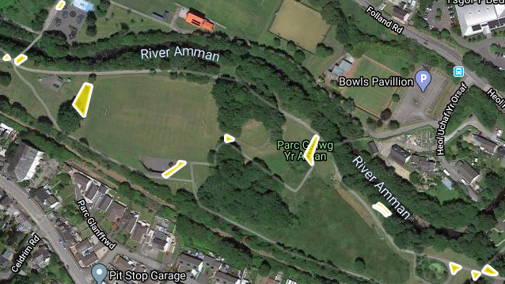
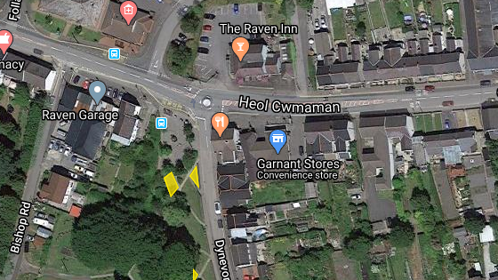

C T C
Dashboard
Bins
Bins
Park's
Park map's
Report's
Bishop Road Park
Bryn Rhos Park
Cwmaman Park
Grenig Park
Gelliwerdd Park
Maesybedol Park
Muga
Penpound Park
Penyrallt Park
Skate Park
Tirycoed Park
Twyn Park
Flower Bed's
Planter's
Wilds Flower Bed's
Propose Flower Bed's
Hanging Basket's
Lamppost Basket's
Round Basket's
Benches
Garnent Benches
Glanaman Benches
Solar Panels Reading
Solar Panels Reading
proposed new areas
Photos of new areas we can turn into wiled flower beds.
Golwg Yr Aman

raven
